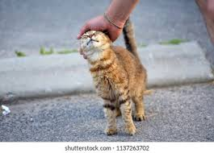
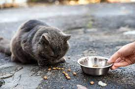
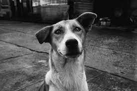
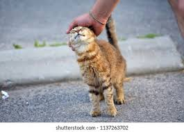
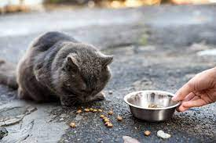
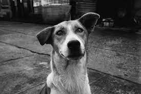

Our Mission - #FeedThemToo
Providing food and care for stray animals in need.
“Until one has loved an animal, a part of one's soul remains unawakened.”
Anatole France
At Feed Them Too, our mission is to make a difference in the lives of stray animals by providing them with the love, care, and nourishment they deserve.Join us in our journey to make a difference, one paw at a time. Together, we can create a world where every stray animal is given a second chance and experiences the love and care they truly deserve.
Providing food and care for stray animals in need.
In India, a staggering number of over 79.9 million animals are at risk, facing various challenges such as abandonment, abuse, and neglect. Stray dogs and cats roam the streets, struggling to find food and shelter. Our NGO is committed to addressing these issues and working tirelessly to rescue, rehabilitate, and advocate for the welfare of these vulnerable animals. Through spaying/neutering programs, medical care, adoption campaigns, and awareness initiatives. Together, let's make a difference and protect the lives of these voiceless beings.
Animal abuse in India is an alarming issue that demands immediate attention. Behind closed doors and in plain sight, countless animals suffer at the hands of cruelty and neglect. From street animals to domestic pets, the widespread mistreatment leaves a dark stain on our society. It's time to shed light on this issue, raise awareness, and work together to end the cycle of abuse. Join us as we uncover the harsh reality and strive to create a compassionate and cruelty-free India for all living beings.
Embracing a furry friend through pet adoption is a wonderful way to begin a heartwarming new chapter in your life. When you open your home to a shelter animal, you not only gain a loyal and loving companion but also provide a second chance for a deserving soul. From playful pups to cuddly kittens, there's a perfect furry friend waiting to bring joy and unconditional love into your life. Join us in the journey of pet adoption and experience the immeasurable rewards of giving a deserving animal a forever home.
In the pursuit of compassion and justice, our animal rescue and liberation initiatives are breaking barriers and saving lives. We refuse to accept the confinement and suffering that so many animals endure. With unwavering determination, we rescue animals from cruel conditions, liberating them from a life of captivity and despair. Our dedicated team works tirelessly to provide medical care, rehabilitation, and a safe haven for these deserving beings. Together, we are rewriting their stories, offering them a chance to experience the freedom and love they deserve. Join us in our mission to break barriers, save lives, and create a world where all animals can thrive in their natural state of being.

There is a special kind of magic in the bond between humans and animals, and it's an experience that warms our hearts and touches our souls. In the presence of our furry companions, we find comfort, joy, and unwavering loyalty. Their unconditional love knows no bounds, and their playful antics can lift our spirits even on the gloomiest of days. From gentle purrs to wagging tails, they have an extraordinary ability to heal, to bring solace, and to teach us the true meaning of compassion. Let us come together to celebrate the power of animal love and the profound impact it has on our lives. In their presence, we discover a world of connection, empathy, and endless happiness.
In the bustling streets where the forgotten and abandoned find solace, our mission is to provide a lifeline for stray companions through feeding initiatives. With compassion as our guide, we strive to ensure that these vulnerable street animals have access to regular nourishment and sustenance. Our dedicated team of volunteers works tirelessly to distribute food, water, and care to these precious souls, giving them a glimmer of hope amidst their struggles. Together, let's make a difference and extend a helping hand to these street animals, offering them the chance to thrive and experience kindness in a world that often overlooks their presence.
Identify the animals incapable of surviving on their own.
Contact an animal shelter or community dog center.
Arrange for some food and water.
Find a temporary shelter for them.
Take care and wait for professional help.
 






Your generous donations enable us to provide food and care for stray animals in need. Every contribution makes a significant difference in their lives.
With your support, we can organize rescue missions to locate and bring stray animals to safety. These missions help us reach animals in distress and provide them with the necessary care they deserve.
Donations also help us cover the cost of medical treatments, vaccinations, and spaying/neutering stray animals to improve their overall health and prevent further suffering.
We work tirelessly to find loving foster homes and forever families for stray animals. Your donations support our adoption programs, ensuring these animals find safe, caring environments to thrive in.
Your generous contribution can change lives. Help us support those in need and make a lasting impact in our community.
Yes! I want to help
Help today and make a difference for those who cannot speak for
themselves
and needs more helping!

Animal Caretaker

Animal Rescuer

Community Outreach

Adoption Coordinator
The secret to happiness lies in helping others. Never underestimate the difference YOU can make in the lives of the poor, the abused, and the helpless animals.
We are a compassionate NGO dedicated to feeding and caring for stray animals, making a positive impact one meal at a time.

Melisa L. Hack
Animal Welfare Advocate

Viola C. Phillips
Veterinarian

Arthur L. Perry
Animal Shelter Volunteer
For any questions, suggestions, or inquiries, please feel free to contact us. Your feedback is valuable, and we're here to assist you in any way we can. Reach out through the provided contact details or the contact form below.
Bankura, West Bengal, 722101 .
feedthemtoo2023@gmail.com
+919474708142
www.feedthemtoo.com